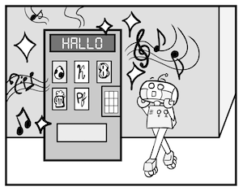

Der Roboter ist endlich frei! Er muss nicht mehr machen, was Wolfgang ihm sagt. “Geh vorwärts! Geh rückwärts! Öffne das Buch, schließe das Buch und lies! Genug! Ich bin jetzt ein[...] 
Er öffnet eine Tür und schaut hineinlooks inside. Was sieht er da? Da steht eine wunderschönbeautiful Maschine! Der Roboter mag sie sofortimmediately. “Du bist sooo schönbeautiful!”, denkt er. Dann hört er etwassomething.
Romantische Musik kommt aus der Maschine. Der Roboter sieht die Machine an und liest: “Hallo! Was willst du trinken?”
“O mein Gott”, denkt der Roboter, “Sie mag mich auch!” und zeigt auf Pfefsi. Der Roboter ist fast verliebtalmost in love.
Die Maschine spieltplays wieder romantische Musik. Der Roboter hört etwas fallen und sieht die Maschine wieder an. Er liest: “Nur für dich!”. Was ist das? Ein Pfefsi?! Die Maschine gibt ihm Pf[...]
Er nimmt das Pfefsi. Ja, er ist hoffnungslos verliebt in die Maschine. Sie hat gegebenhas given ihm Pfefsi und es warit was nur für ihn allein!
Roboter öffnet das Pfefsi und trinkt. Endlich ist er glücklich. Diese Maschine ist die Liebe seines Lebens! Endlich hat gefundenhas found!!!
Dochhowever dann kommt ein Student vorbei. Der Roboter dreht sich um. Was war das? Die Maschine sagt: “Hallo! Was willst du trinken?”.
Der Roboter wird nervös.
Der Student zeigt auf Cola. Die Maschine spielt Musik und… gibt ihm eine Cola.
“N-E-E-E-I-N!!!”, schreit der Roboter, “Tu das nicht! Du bist die Liebe meines Lebens!” Aber auf der Maschine steht: “Nur für dich!”.
Der Roboter wirft das Pfefsi auf den Boden und läuft weinendcrying weg. “Wie konnte sie nur? Und ich habe sie so geliebt!”